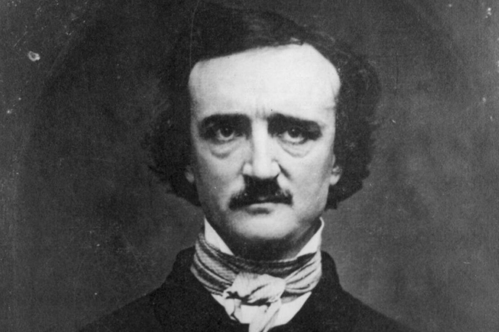

Edgar Allan Poe has always been one of my favorite poets. He covers some very dark aspects of losing loved ones and as someone who has lost a parent at a young age, it is nice to know someone has had the same feelings. I also really loved his short stories they are interesting and enjoyable.
 The poem "Alone" by Edgar Allan Poe